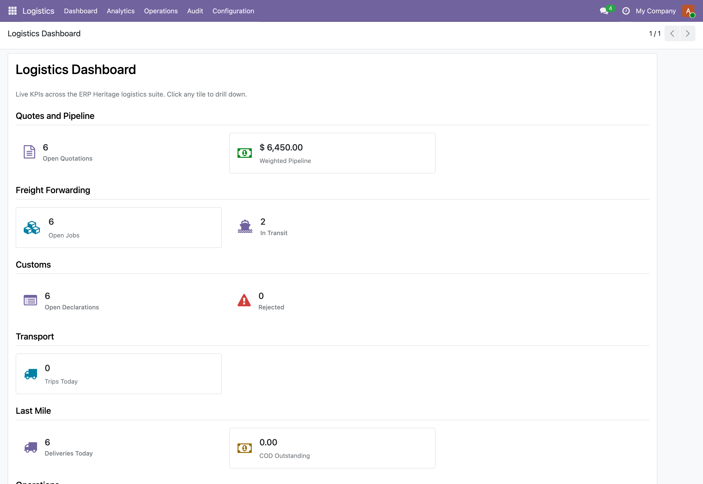
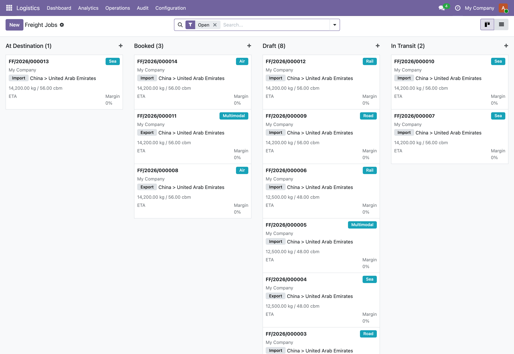

See it in action

One suite, one operational paneQuotations, freight, customs, transport, last mile, cold chain, containers, ship agency and project cargo, every engine reporting into one dashboard.

The forwarding boardThe freight desk reads its whole book in one screen, grouped by state with mode, lane and cargo on every card.

Every file wired to the suiteA job file links out to quotations, bills of lading, containers, bookings, customs, cold chain and disputes, one connected operation rather than isolated modules.